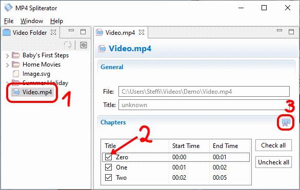

MP4 Spliterator
Split MP4 Into Chapters

Splitting an MP4 into chapters is an easy process which can be done in very little clicks:
- 1st a) Double click on a video in the
 Video Folder.
Video Folder. - 1st b) Or open a video directly via the menu File →
 Open Video.
Open Video. - 2nd The video will be opened in a separate section where you can check and uncheck the chapters.
- 3rd Click
 Export Chapters Separately and choose a folder. The chapters will be exported into this folder.
Export Chapters Separately and choose a folder. The chapters will be exported into this folder.